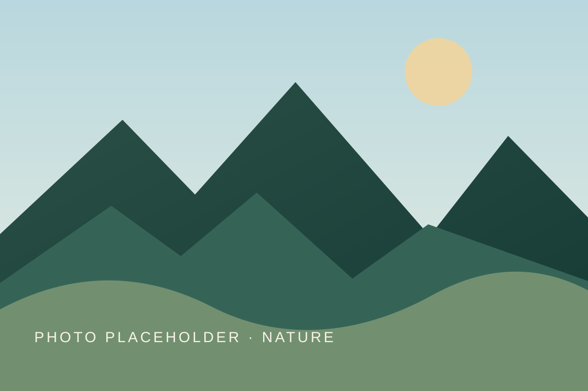

Aseer highland field guide
A slower way to find Abha.
A focused map for cloud forests, heritage lanes, good coffee, and family stops across Abha, Al Soudah, and Rijal Almaa.

Choose your day
Which side of Abha calls you?
Select a route lens to reveal its verified places.
Your map is ready.
Choose a route lens to reveal a small set of places.
A list, not just a map
Places in this route
Use this keyboard-friendly list to choose a place.
Travel thoughtfully
Good to know before you go
Exact pin: Each map link opens the same coordinate used by this guide.
Check ahead: Confirm times, prices, access, and seasonal availability directly with each place.
Illustrated for now: Current art is a local placeholder, ready to be replaced by licensed photography.